Letters To You
A love letter to my mona
The Kiwi Chronicles
Hi 😊
Time for me to talk to the wall again, hoping that you will read it and it will bring you a smile.
Hoping that you still care.
First, an update on Kiwa. You haven’t asked but I know you care and probably think she’s well cared for. And you would be right hehe, she seems to have made a full recovery, I am still giving her antibiotic pills, but her attitude is back to normal.
Running around, jumping around, constantly attacking mango (she loves him), meowing, purring and cuddling with me in the mornings.
I think she misses you, it’s hard to tell if animals will remember us when we are gone, but you were such a huge part of her infancy that I’m 100% sure she wonders where that beautiful blonde lady that used to take care of her is, her momma.
I wish I could tell her that the decision to leave broke your heart, but you had to do it for your wellbeing.
Then we could lay in bed at night and miss you together.. hoping that one day we will hug you again.
On another note, just when I was praising her, right when I was thinking about this letter, I heard a loud bang coming from behind me...
Aaaaaaaaaaand she broke the bedside lamp. Destroyed it completely, the last one. Fucking bitch hahah.
Now she's back to sleep, in the carry box thingy that I used to take her to the vet.. She loves it in there haha.
As for me, well, I’m still holding the candle.
I get more impatient with each day, I can’t wait to talk to you, to see you, to share my life with you, to experience your new life and watch you work on those tables hehe, to jump to the part where you realize we still love each other and that love requires hard work and sacrifice and we don’t always get it right at the first try.
I can’t wait to jump to the part where you give me the chance to make everything right again.
But, I have to fight my urges and let you be. Which makes me scared because I know that day might never come and that a message from me would mean nothing to you.
And that thought is enough to break my heart again.
Nevertheless, I'm staying positive and this is for you
Thank you for trying your best to be in Uruguay for me
Thank you for being my biggest supporter
Thank you for loving me even when I didn't love myself
I appreciate you so much, more than I was able to show
I really hope you know how much you mean to me
You’re such a wonderful person with a pure heart
You’re still the one I run to
There hasn’t been a night where I didn’t fall asleep thinking about you
You’re the one that I belong to
The one that I want for life
There is no version of the future I want to live in that doesn’t have you in it
You’re still my home.
You’re still my life.
Franz
22, Feb 2026
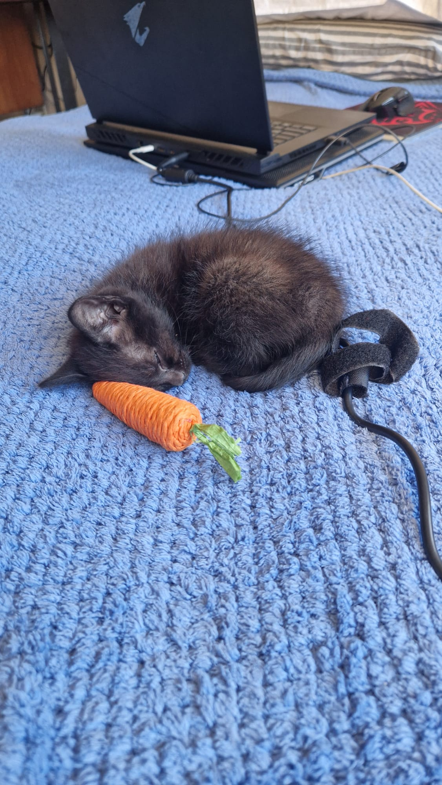 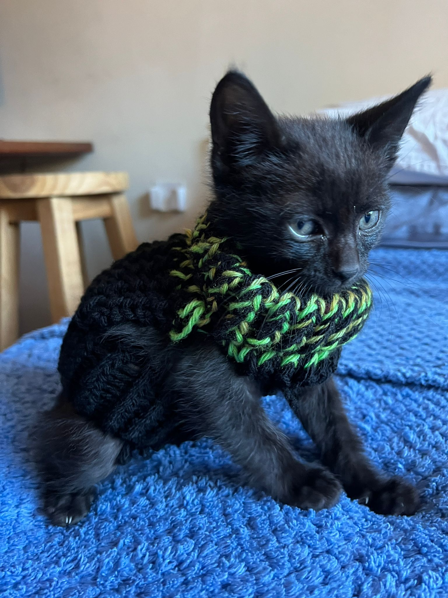 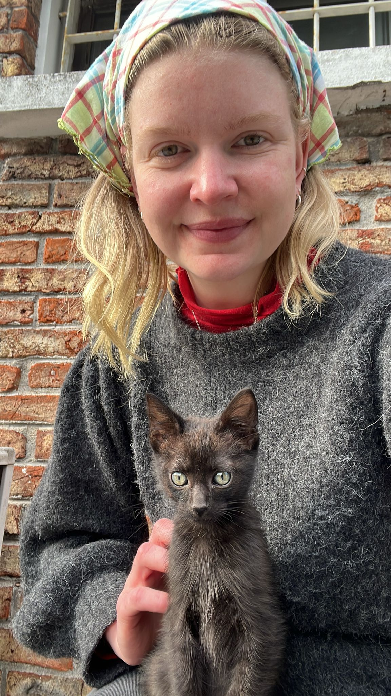 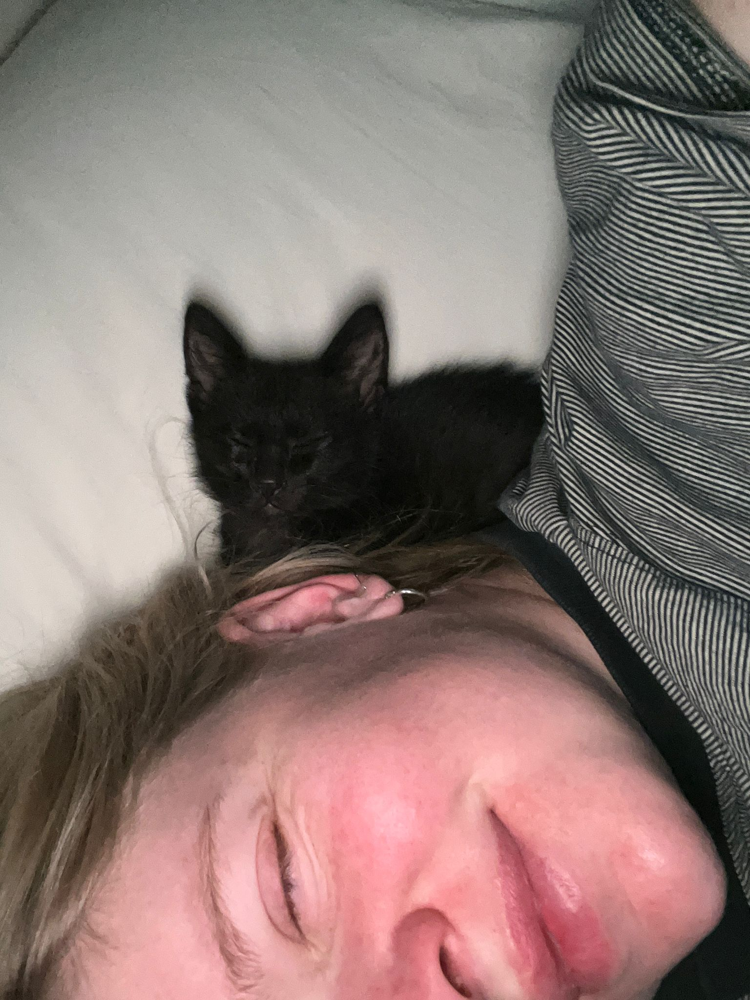 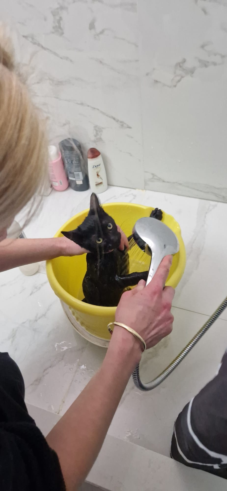 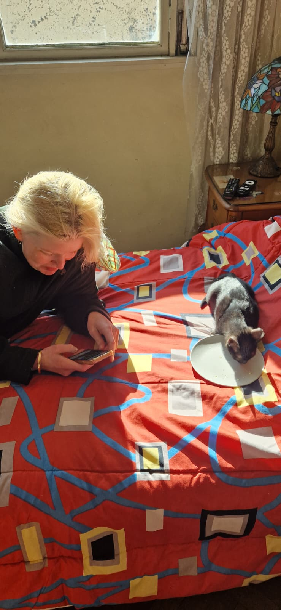 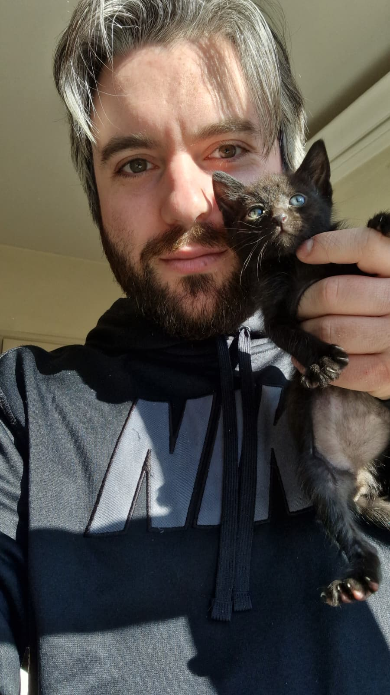 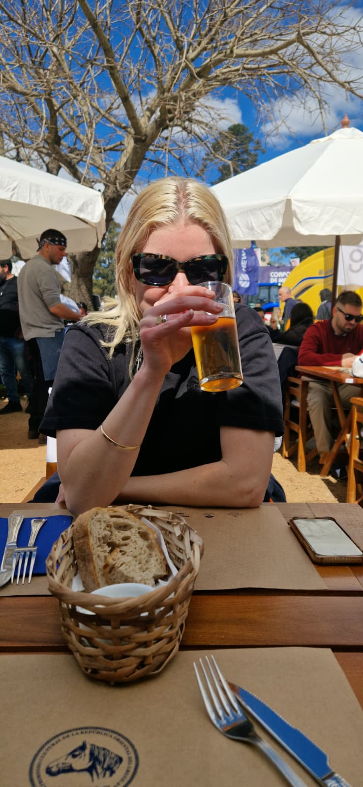 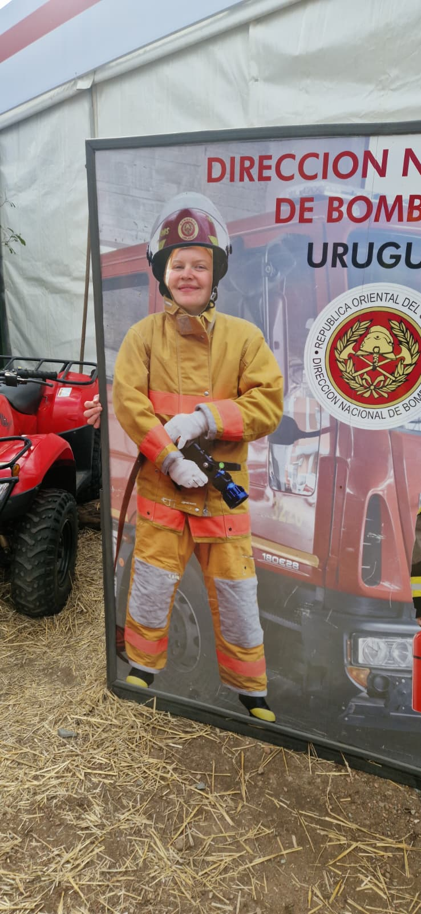Another Day
Dear Hanna,
Today I woke up and started another day
A pretty normal one; had lunch, played with kiwi, applied to some jobs and got frustrated by the lack of apparent opportunities.
Normally that’s when I’d feel overwhelmed and I’d open CS to play a couple of matches to block those negative feelings out. But I chose to open the Google Certificate thingy instead and did that for a while. Not for too long, but long enough. A step forward, nonetheless.
The day, however, was marked by a conversation we had about a month ago.
From the moment I woke up I couldn’t get it out of my head, and it would come back every few hours to haunt me until I put pen to paper and confront it.
You see, at the time you had gone out with your friends, and we were disconnected for a couple of hours. You finally got back to me hours later and were a bit drunk.
That was probably the 3rd outing you have had in a short span, and I was feeling left out, angry, scared, worried.
Not because of you meeting your friends - you were just having fun, and you deserved it!
But because I was scared that you would somehow forget me and move on. I was worried that you would meet someone new. I was angry because I was hating myself and I was powerless.. Or at least that’s how I felt at the time.
I was frustrated because you’d flipped my photo on the back of your phone and that somehow meant you were ashamed of me and you didn’t want people to see me.
I know now there’s plenty I could’ve done differently in that situation.
I could’ve given you more attention and showed you that you were always on my mind, showed you I was worth keeping around.
I could’ve found stuff to do together over the phone and kept us connected. I could’ve told you how I was feeling, and more importantly I could’ve planned our future together to make sure we had something to look forward to.
But instead, I detached myself slightly. In search for validation, in search for that ‘what’s wrong baby’ message that would show me you still loved me.
You had always been spot on in the past in detecting when I was feeling hurt, and you asking had always felt like a hug to my soul, a bit of validation and reassurance that I’m still your mono. Even when I wasn’t making things easy for you.
Of course, in doing that, in my search for reassurance, I was hurting you in the process.
So, you asked me why I was being distant.. why was I not saying ‘I love you, I miss you’ more often.
You said you weren’t doing anything wrong so why was I making you feel like you had.
And even back then, this feeling of me failing you took over me. Why was I doing that? I mean I know why.. for the reasons I listed above! But you didn’t deserve to feel that way. You deserved to be treated like the amazing woman you are. So, I would walk my attitude back and reassure you that I loved you, and that nothing was wrong. Hiding the truth that I was in fact really hurt, and moving on to the next topic, to the next day..
I can learn many things from this life lesson.
But the most important one is communication.
A flourishing relationship must have it as a foundation.
So, from my side of things, I should’ve communicated my feelings and I should’ve shown you how much I fucking loved you. Even if I was scared, even if I was hurting, even if it rained.
Forever yours,
Franz
21, Feb 2026 (still)
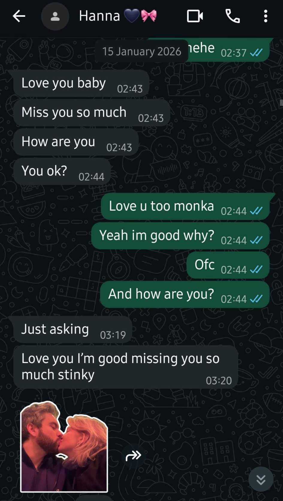 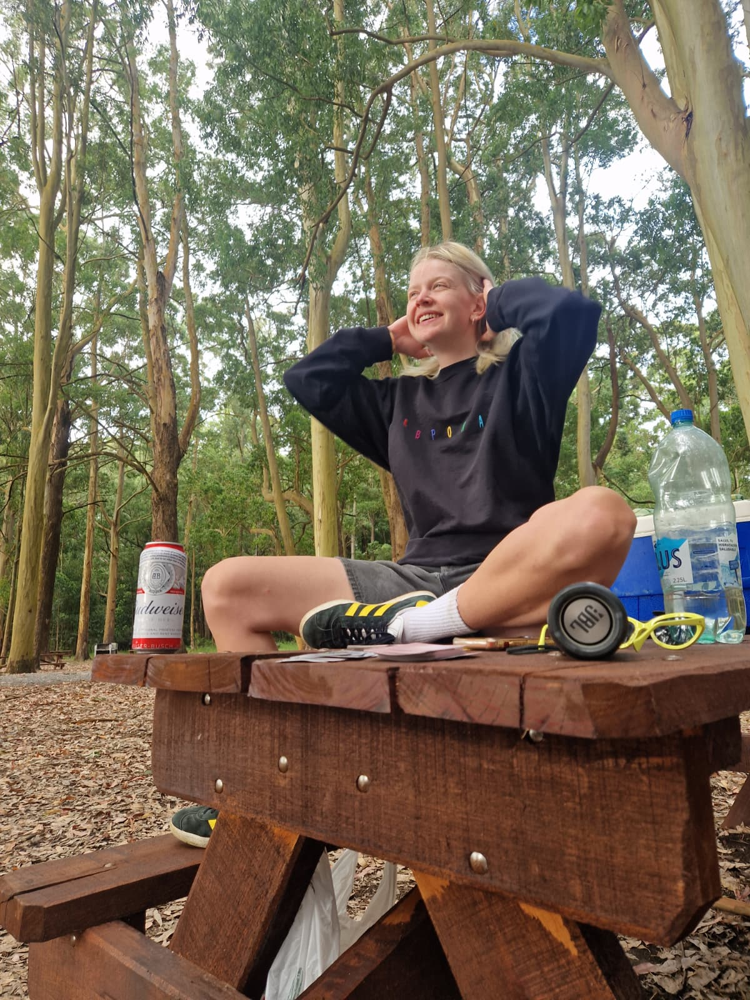Always And Forever
Dear Hanna,
I’m not sure how to navigate the waters that are ahead of us.
I’ve accepted the fact that the only thing that can heal us now is time.
I need to let you breathe, I need to let you figure out your feelings. I need to be careful enough not to make you sigh and say: ‘not this again, not this guy… ‘
But time.. Time is also the thing that can make us move on and grow apart.
So, you see.. I am at an impasse right now
On one hand, the reality of the pain I caused you and the dreadful consequences that came with it.
On the other, the unstoppable feeling that burst out of my heart screaming DON’T YOU DARE GIVE UP NOW!
Ultimately, I must let things play out and run the risk of losing you for good.
But I will not go down without a fight. And another fight, and another fight… Because you deserve nothing less than that.
And as long as I live and breathe, I will still be your mono, your love, your heart.
With that in mind, I built this website.
It’s a love letter to you, and I’ll share anything here; from grandiose badly written poems to small stuff like how my day was.
Forever yours,
Franz
21 Feb, 2026